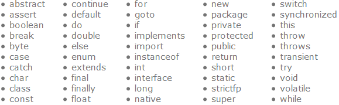
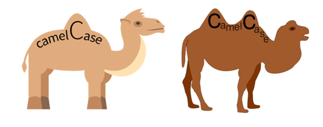

Nombrar a una variable
Las variables pueden tener cualquier nombre, siempre y cuando no rompan con alguna de las siguientes reglas:
- Un nombre de variable se puede definir con uno o más caracteres.
- No de tener espacios.
- El primer carácter tiene que ser una letra (a, b, c...), el carácter guion bajo ( _ ) o el dólar ($).
- Los siguientes caracteres pueden ser letras, el guión bajo, el dólar o dígitos (0, 1, 2...).
- No puede ser alguna de las palabras reservadas que usa Java para sus comandos.
los siguientes nombres son identificadores de variables validos en Java:
- ciudad
- codigoPostal
- codigo_postal
- numero2
- $total
Sin embargo, los siguientes identificadores no son válidos:
- ciudad?
- codigo-postal
- 2numero
- 8.76v
- nombre@apellido
Existen varias palabras reservadas que Java utiliza para identificar las funcionalidades internas del lenguaje o sirven para describir al programa un tipo de valor, por lo que no puedes llamar a una variable igual a una palabra clave, ya que el compilador la confundiría como una función que quieres ejecutar en dé vez de una variable. A continuación, te mostramos una lista (tabla 1) de todas las palabras clave de Java 8 (puede haber más en versiones futuras de Java)
Existen también varias convenciones que no son obligatorias pero que todos los que desarrollan programas en Java tratan de seguir para tener un código más limpio y presentable. Recomendamos seguir tales convenciones como lo son:
- La primera letra debe ser minúscula al nombrar una variable.
- Utiliza nomenclatura camelCase.
- Es recomendable utilizar nombres con un significado explícito, y en lo posible, cortos.
La nomenclatura camelCase es un estilo de escritura que se aplica a frases o palabras compuestas por dos o más palabras sin tener que separarlas con un espacio, tiene dos versiones, la camelcase y la UpperCamelCase.
UpperCamelCase consiste en que la primera letra de cada palabra esté en mayúsculas, ejemplos: TotalVentas, SalaDeEstar, PromedioPonderado, y la versión camelCase, la normalita, es que todas las primeras letras de cada palabra estén en mayúsculas excepto la primera, ejemplos: totalVentas, salaPrincipal, corredorDeAccesoPrincipal, etc. camelCase es la nomenclatura que se usa por convención para las variables en Java.
